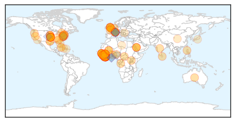

Swine Flu
30-Day Web Trend
3 alerts, 8 warnings

30-Day Twitter Trend
7 alerts, 0 warnings

Article Locations

Article Confidences

Top Articles:
- 0.997
- Swine flu toll in Telangana mounts to 75
- 0.996
- 34 fresh cases of swine flu in Bengal, Gautam Deb stable
- 0.996
- Dead patient tested positive for swine flu
- 0.995
- Dead patient tested positive for swine flu
- 0.994
- 34 fresh cases of swine flu in Bengal, Gautam Deb stable
- 0.994
- 34 fresh cases of swine flu in Bengal, Gautam Deb stable
- 0.994
- ‘Reserve beds for contagious disease cases’
- 0.992
- One more swine flu death in Bengal, toll 24
- 0.991
- 25 fresh cases of swine flu in Telangana
- 0.990
- Flu deaths in Oklahoma top 100
- 0.989
- One more swine flu death in Bengal, toll 24
- 0.988
- One more swine flu death in Bengal, toll 24
- 0.985
- One more swine flu death in Bengal, toll 24
- 0.977
- Swine flu claims three more lives
- 0.975
- H1N1 scare: Health Department forms teams
- 0.953
- Swine flu death toll at 24 in West Bengal
- 0.911
- Saudi govt: H1N1 clearance certificate must for Haj pilgrims
- 0.723
- Report: PA and Israeli Healthcare Officials Meet to Discuss Swine Flu Outbreak
Top Tweets:
-
No tweets found for Mar 20, 2015
Ebola
30-Day Web Trend
0 alerts, 0 warnings

30-Day Twitter Trend
0 alerts, 0 warnings

Article Locations
Article Confidences

Top Articles:
- 1.000
- Emails: UN health agency resisted declaring Ebola emergency
- 1.000
- Emails: UN health agency resisted declaring Ebola emergency
- 1.000
- Emails: UN health agency resisted declaring Ebola emergency
- 1.000
- Liberia Reports First Ebola Case in Weeks
- 1.000
- Emails reveal WHO intentionally delayed declaring Ebola emergency
- 1.000
- ‘WHO resisted declaring Ebola emergency’
- 1.000
- Emails: UN health agency resisted declaring Ebola emergency
- 1.000
- Liberia reports first new case of Ebola in weeks
- 1.000
- Spike in Ebola in Guinea could reflect access to hidden patients
- 1.000
- Emails: UN health agency resisted declaring Ebola emergency
- 1.000
- Ebola-hit Sierra Leone to lock down 2.5 million people
- 1.000
- Spike in Ebola in Guinea could reflect access to hidden patients
- 1.000
- Sierra Leone to lock down Ebola hotspots next week - officials
- 1.000
- Ebola case undermines Liberia disease-free hopes
- 1.000
- WHO resisted declaring Ebola emergency on economic, political grounds
- 1.000
- Liberia reports first new case of Ebola in weeks
- 1.000
- Ebola-hit Sierra Leone to lock down 2.5 million people
- 1.000
- Emails: UN health agency resisted declaring Ebola emergency
- 0.999
- Lockdown of 2.5 million people in Ebola-hit Sierra Leone
- 0.999
- Liberia Reports First Ebola Case in Weeks
- 0.999
- Ebola-hit Sierra Leone to lock down 2.5 million people
- 0.999
- Sierra Leone imposes new curfew to contain Ebola
- 0.999
- Tracking Ebola: the killer hiding in the jungle
- 0.999
- AP: UN Stalled Declaration of Ebola Emergency for Fear of Interfering with Mecca Pilgrimage
- 0.999
- Sierra Leone imposes new curfew to contain Ebola
- 0.999
- WHO Warns of Measles in Ebola Countries
- 0.998
- Guinea reports highest weekly Ebola case total so far this year, new UN data shows
- 0.998
- Ebola: Sierra Leone announces 3-day lockdown of 2.5 million people
- 0.998
- Emails: WHO resisted declaring Ebola emergency
- 0.997
- Helen Scott: How Canada can help beat Ebola
- 0.997
- Ebola: Sierra Leone to enforce 3-day lockdown
- 0.997
- Emails show UN health agency resisted declaring Ebola emergency on economic, political grounds
- 0.996
- Violence against women rises in Ebola-hit nations: ministers: TRFN
- 0.996
- Sierra Leone’s ex-VP to challenge removal
- 0.996
- Beyond the outbreak: leading expert on what the Ebola crisis can teach us
- 0.996
- Liberia: MICAT Clarifies U.S. Role in Allison's Case
- 0.995
- World Health Organisation 'intentionally delayed declaring Ebola emergency'
- 0.995
- U.N. delayed Ebola alarm
- 0.995
- Revealed: Three people tested for deadly Ebola virus in Greater Manchester since start of global outbreak
- 0.995
- Emails: UN health agency resisted declaring Ebola emergency
- 0.994
- Emails: UN health agency resisted declaring Ebola emergency
- 0.994
- Emails show leaders delayed Ebola S.O.S.
- 0.994
- Hunting for the next Ebola outbreak in the deep African jungle
- 0.994
- Emails: UN health agency resisted declaring Ebola emergency
- 0.994
- Liberia pays benefits to families of deceased Ebola health workers
- 0.994
- World Health Organization Delayed Declaring Ebola An Emergency For 2 Months
- 0.994
- Fiji Times Online
- 0.993
- Ebola outbreak: UN health agency waited several weeks before declaring emergency
- 0.993
- Fort Smith/Fayetteville News
- 0.992
- Guinea only reported confirmed Ebola cases and deaths
Showing top 50 articles...
Top Tweets:
- 0.989
- Ebola outbreak has reduced vaccination coverage in Guinea, Liberia, Sierra Leone, as health facilities, staff focus on halting the outbreak
- 0.972
- Liberia official: New patient tests positive for Ebola - USA TODAY http://t.co/Q4U6oljkSh ebola EVD
- 0.967
- During the Ebola outbreak, ppl infected w/ malaria hv been unable to get treatment due to fear to seek help at health centres
- 0.942
- Sierra Leoneans halt genital mutilation amid Ebola fears: UK minister - Reuters http://t.co/6SM83mxZMV ebola EVD
- 0.892
- Deep in the jungle, hunting for the next Ebola outbreak - Washington Post http://t.co/4DbCksh2WD ebola EVD
- 0.887
- Liberia Reports First Ebola Case in Weeks - New York Times http://t.co/pODXygWzz0 ebola EVD
- 0.879
- Families of Liberian health workers killed by Ebola get $5G - Fox News http://t.co/N5qG4UaQUB ebola EVD
- 0.874
- Emails: UN Health Agency Resisted Declaring Ebola Emergency - ABC News http://t.co/0WLTnX24gz ebola EVD
- 0.854
- How to Prevent the Next Ebola - The Atlantic http://t.co/SFMfvIsONh ebola EVD
- 0.846
- Ebola Update: 24,743 confirmed, probable and suspected cases reported in 3 most affected countries, with 10,216 deaths. EbolaResponse
- 0.792
- Ebola outbreak: UN health agency waited several weeks before declaring emergency http://t.co/Qyh9VUInrW
- 0.774
- Emails reveal WHO delayed declaring Ebola emergency due to political ... - Fox News http://t.co/aJ80jwwycF ebola EVD
- 0.747
- Boosting Vaccination Coverage 'Very Pressing' To Recovery Process In Ebola ... - Huffington Post http://t.co/uX5WlvY1Pd ebola EVD
- 0.744
- RT: BREAKING: A new case of ebola has been confirmed in Liberia just weeks before it was due to be declared free of the disease.
- 0.732
- 'Ebola-proof' tablet device developed - BBC News http://t.co/QP2rqifbeO ebola EVD
- 0.731
- Tracking Ebola: the killer hiding in the jungle - The Independent http://t.co/FlGBKcofrX ebola EVD
- 0.718
- News pouch on avianflu avianinfluenza Ebola EbolaResponse MERS is here: http://t.co/mkHinlGoA9
- 0.696
- The animals that spark Ebola - Washington Post http://t.co/QkVTUn6Imv ebola EVD
- 0.678
- Google Builds a New Tablet for the Fight Against Ebola - Wired http://t.co/sQkJrDat3K ebola EVD
- 0.678
- Google Builds a New Tablet for the Fight Against Ebola - Wired http://t.co/B848dJNaV0 ebola EVD
- 0.653
- This sucks! MT: AP reports first Patient Diagnosed With Ebola In Liberia After 2 Week Hiatus http://t.co/kdiKeEUw4U
- 0.651
- .@LiveScience reports "shadow transmission" of Ebola could reignite the epidemic if we are not cautious http://t.co/GCnqMPXCcq
- 0.638
- Our own is in W. Africa surveying the status of the Ebola outbreak. A sign of the times TackleEbola http://t.co/0B7cHASdPf
- 0.598
- RT: Are we learning enough through the Ebola outbreak to prevent the next one? http://t.co/xZVTRg9Je4 TackleEbola http://t.c…
- 0.550
- RT: Le PNUD appuie l'esprit de citoyenneté et le leadership associatif des jeunes volontaires de Mamou contre Ebola. http://t.c…
- 0.541
- Slow responses, deadly outbreak: An Ebola timeline via: http://t.co/rXDeQrMvRj
- 0.526
- The UNDG says that West Africa may lose $3.6 billion/yr for 3 yrs as a result of Ebola related trade deficits.http://t.co/qPw5tNSVs0
- 0.520
- New Confirmed Ebola Case Sets Liberia Back http://t.co/ZZlxNxnxcA